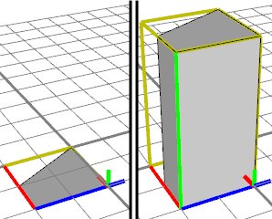
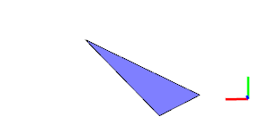
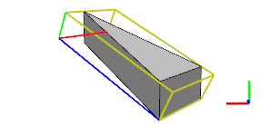
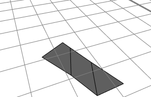
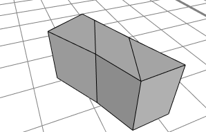

extrude
Synopsis
extrude(height)
extrude(axisWorld, height)
Parameters
- height (float)
How many units to extrude. - axisWorld (selstring)
Use a world coordinate axis as extrusion direction (world.x | world.y | world.z).
 Extrudes the shape. Each face polygon of all meshes in the geometry asset is taken and extruded along the face normal or the given world-coordinate axis.
The scope orientation is set in the following way:
Extrudes the shape. Each face polygon of all meshes in the geometry asset is taken and extruded along the face normal or the given world-coordinate axis.
The scope orientation is set in the following way:
- x-axis direction is kept as much as possible (old x-axis is projected to plane orthogonal to extrusion direction)
- y-axis along the extrusion direction
- z-axis normal to the two above
If height is < 0, the scope.sy attribute will be < 0.
Related
- envelope operation
- offset operation
- roofGable operation
- roofHip operation
- roofPyramid operation
- roofShed operation
- taper operation
Examples
Lot Extrusion
 |
Lot--> extrude(4) BuildingExtruding a building lot. On the left, the lot and the initial scope and pivot are shown; on the right is the extruded building mass model, again with scope and pivot. |
Lot Extrusion along a World Coordinate Axis
 |
This building footprint is slanted, e.g. lies on a hill. |
 |
Lot--> extrude(world.y, 30)By extruding along the world coordinate system's y-axis, a mass model with upright sides is produced. |
Extrusion of Multi-Face Initial Shapes
 |
On the right, an initial shape consisting of 3 faces is shown.. |
 |
Lot--> extrude(12)The extrude operation extrudes all faces and combines the results. No internal lamina faces are created. |
Copyright ©2008-2015 Esri R&D Center Zurich. All rights reserved.